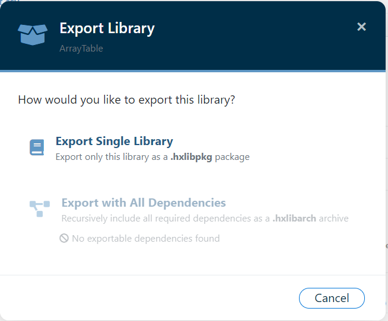
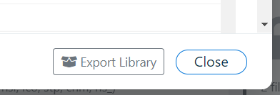
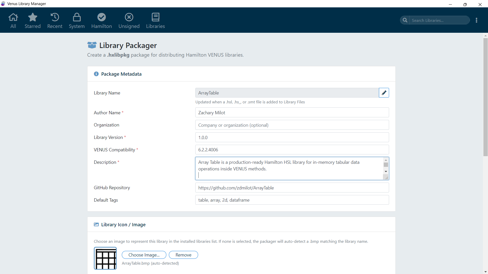
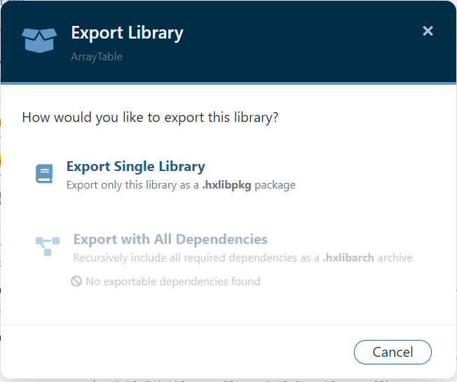
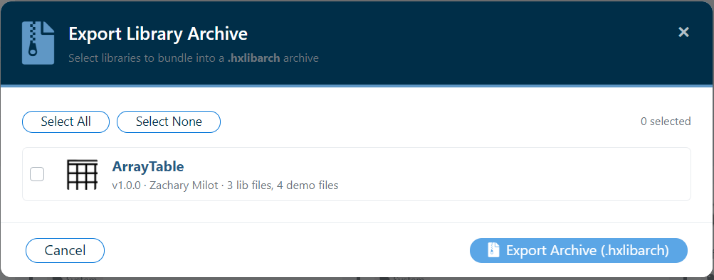

Overview
Venus Library Manager can export installed libraries back into portable package files. All exported files use the binary container format - they are not plain ZIP files and cannot be opened by standard archive tools. Exports always reflect the current on-disk state of the library files (mutable export), so any changes made since the original import are captured in the exported package.
When exporting from the Library Detail Modal, Venus Library Manager presents an Export Choice Modal that lets you choose between exporting just the library itself, or exporting the library together with all of its dependencies.
Export Choice Modal
Clicking the Export Library button on the Library Detail Modal opens the Export Choice Modal with two options:
| Option | Output Format | Description |
|---|---|---|
| Export Single Library | .hxlibpkg | Exports only this library as a single-library package |
| Export with All Dependencies | .hxlibarch | Recursively resolves all required dependencies and bundles the library plus every dependency into a multi-library archive |

Dependency Summary
The Export Choice Modal automatically scans the library's HSL source files for #include directives and recursively resolves them to user-installed libraries. A summary is displayed beneath the "Export with All Dependencies" option showing the number of dependencies found and their names.
Disabled State
If the library has no exportable user-installed dependencies, the "Export with All Dependencies" option is greyed out and cannot be selected. Only user-installed libraries can be included in a dependency export - system libraries and unresolved references are excluded.
Single Library Export (.hxlibpkg)
GUI Workflow
- Click on a library card to open the Library Detail Modal
- Click the Export Library button
- In the Export Choice Modal, select Export Single Library
- Choose a save location - the suggested filename is
<LibraryName>.hxlibpkg - Venus Library Manager verifies that all expected library files exist on disk before exporting
- A new
.hxlibpkgis built from the current files and metadata

The export form pre-fills with the library's current metadata. Review the details and choose a save location:

What Is Included in the Export
The exported package contains:
manifest.jsonwith current metadata (a newcreated_dateis stamped)- All library files in the
library/directory (including.chmhelp files) - All demo method files in the
demo_methods/directory - Metadata fields: tags, base64-encoded image, COM DLL list
signature.json- HMAC-SHA256 integrity signature covering all package entries
The resulting file is wrapped in a binary container with its own HMAC-SHA256 digest and XOR scrambling, ensuring the package cannot be opened or modified by standard tools.
Restrictions
- System libraries (Hamilton built-in) cannot be exported. They are read-only.
- Deleted libraries cannot be exported.
- If any expected library file is missing on disk, the export is aborted with an error message.
Export with All Dependencies (.hxlibarch)
Overview
The "Export with All Dependencies" option creates a .hxlibarch archive that contains the selected library plus every user-installed library it depends on, resolved recursively. This is designed for sharing or deploying a library to another system that may not have the required dependencies installed.
GUI Workflow
- Click on a library card to open the Library Detail Modal
- Click the Export Library button
- In the Export Choice Modal, select Export with All Dependencies
- Choose a save location - the suggested filename is
<LibraryName>_with_dependencies.hxlibarch - Venus Library Manager recursively resolves all dependencies and packages everything into a single archive

How Recursive Dependency Resolution Works
When you choose to export with dependencies, Venus Library Manager performs the following steps:
- Scans HSL source files: All
.hsland.hs_files in the library are scanned for#includedirectives - Resolves includes: Each
#includetarget is resolved to a user-installed library by matching file names against the installed library database - Filters self-references: Includes that point to files within the library itself are excluded
- Recurses into dependencies: Each resolved dependency is itself scanned for
#includedirectives, and its dependencies are resolved. This continues until the entire dependency tree has been walked - Cycle protection: Already-visited libraries are tracked to prevent infinite loops in circular dependency chains
- Deduplication: Each dependency library is included only once in the output archive, regardless of how many times it appears in the dependency tree
What Is Included
- The root library (the library you clicked Export on)
- All user-installed dependency libraries found via recursive resolution
- Each library is individually packaged as an inner
.hxlibpkgbinary container with its own manifest, payload files, and HMAC-SHA256 integrity signature - An
archive_manifest.jsonlisting all included libraries
What Is NOT Included
- System libraries (Hamilton built-in) - these are assumed to exist on the target system
- Unresolved dependencies - includes that cannot be matched to any installed library
- Unsigned libraries - libraries discovered via the unsigned scanner but not formally installed
Note: The resulting .hxlibarch archive can be imported using the standard archive import workflow. All libraries in the archive will be installed individually, just like any other .hxlibarch file. See Importing Libraries for details.
Success Confirmation
After a successful dependency export, a success dialog is shown listing the root library and all included dependencies, along with file counts and the save path.
Multi-Library Archive Export (.hxlibarch)
GUI Workflow
- Open the Archive Export modal
- All non-deleted installed libraries are listed with checkboxes
- Select libraries individually, or use Select All / Select None
- Choose an output location for the
.hxlibarchfile - Each selected library is re-packed from its current installed state

Archive Contents
The resulting .hxlibarch file contains:
- An
archive_manifest.jsonwith archive metadata, library count, included library names, and a base64-encoded purple archive icon - One
.hxlibpkgentry per selected library - each is a full binary container with its ownmanifest.json, payload, andsignature.jsonintegrity signature - An
icon/archive_icon.pngfile - a distinctive purple icon (three stacked purple diamonds) that visually identifies the file as a multi-library archive
The archive icon is loaded from the static asset assets/archive_icon_128.png at export time. See Visual Identity & Assets for details.
CLI Export
See CLI: export-lib for single exports and CLI: export-archive for archive exports.
Mutable Export
Note: Exports read files from their current location on disk, not from a cached snapshot. If library files have been modified since they were installed (for example, during development or customization), the export will include the modified versions. This is by design, supporting iterative development workflows.
If you need the original imported version, use Version Rollback to access the cached package from the package store.
Exporting Unsigned Libraries
Libraries that were discovered via the Unsigned Libraries scanner (files in the Library folder that are not tracked by any installed or system library) can also be exported as .hxlibpkg packages. This provides a convenient path for bringing unmanaged libraries under proper package management.
To export an unsigned library:
- Enable the Include existing unsigned libraries on the front page setting and run a scan (or enable Scan for new unsigned libraries each launch to have the scan run automatically at startup)
- Navigate to the Unsigned group tab
- Click a library card to open the detail modal
- Fill in the metadata fields (Author, Version, Description, etc.)
- Click Export as Package and choose a save location
The exported package includes all discovered files, a generated manifest, an icon (if a .bmp was found), and an HMAC-SHA256 integrity signature. See Unsigned Libraries for full details.